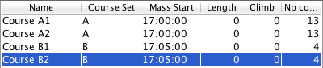
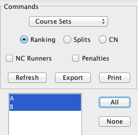
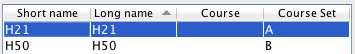

One Man Relay with Course Sets
One Man Relay is a popular format where each runner completes all legs/loops in a single course, often with a mass start to favor contacts during the race. Although it was possible to organize OMR prior to 2.2, Geco now provides some helpful features to make it easier. This page explains how to best use those features in Geco.
Setting up a One Man Relay in Geco
Let’s take a simple example. Given three legs A, B, and C, there are many ways to combine these legs to get equivalent courses: ABC, ACB, BAC, BCA, CAB, CBA. Each competitor will run one (and only one) of these courses. Geco needs to know about each of this variant courses (their specific sequence of codes) in order to check punch codes for one runner variant.
Fortunately course design softwares allow you to create all variations for a one man relay and export them as courses in XML format. That means setting up a One Man Relay is really not different from any other race setup in Geco:
- export courses as XML from your course design software (you can also create them by hand);
- import them in the course configuration panel;
- set mass start times for each course if need be;
- proceed with competitors registration.
There are no constraint on the way to register competitors. You can pre-assign them one of the variant courses before the race - in which case you must ensure they get the right map with their assigned course at start. Or you can set the auto course for all competitors: this way you use the powerful course detection algorithm to let Geco determine which variant has been run by the competitor (see below for more on that subject).
Using Course Sets to export OMR results
Exporting results for a OMR is where you handle things in a different way. Indeed, generating results by course would not give you full results as runners would only be ranked by variants. You could use categories to rank together competitors across different variants. But this is not possible if categories do not match the set of variants (for example, if you wish to keep age categories).
Starting with 2.2, Geco introduces Course Sets, which lets you define arbitrary groups of related courses and rank together runners belonging to the same course set.

To use course sets, first go to the course configuration panel:
- you can link any course to a course set by giving the name of the course set in the custom cell;
- if the course set does not yet exist, it will be created on the fly;
- then go to the results, select Course Sets instead of Courses or Categories for ranking runners, and press Refresh to compute the results.

Lightweight OMR with Auto handler and Course Sets
Course detection by the Auto handler is a powerful tool to make your organization lightweight, especially when it comes to a One Man Relay. Indeed, with this mode you don’t have to preset a course for each runner, and moreover you don’t have to ensure that they take the map with the right course at start. You just let Geco detect which variant the runner has run, based on punch codes.
Note: this assumes that all your competitors play fair and don’t follow blindly another runner, regardless of the course on their map. Geco can not detect cheaters based on their punch codes!
Restrict Course Detection using Course Sets
In some cases, you may want Geco to be more strict about the courses a competitor may fall in after automatic detection. For example, take a Men 21 starting on a long course and quitting early. At readout, there is chance that Geco will assign a short course to the runner (as he has few punch codes and thus less missing punches on this short course). If you want to avoid this, you can setup Geco so that a runner in a given category can only be assigned courses in a given course set.
- Tick the “Restrict course detection…” in the SI reader configuration panel.
- Link a category with a course set in the category configuration panel.
- Course sets work the same way in course and categories panel. You can create a course set on the fly for a category, but then it will be empty until you also link some courses to the same course set.

In our example, you can create a course set named A, linked to courses A1, A2, A3, and also link the Men 21 category to the same course set. At readout, Geco will set the best match among A1, A2, A3 courses for a M21 runner with Auto course. But it will not use other courses.

Course sets for categories work for course detection much in the same way as default courses for categories work for registration.